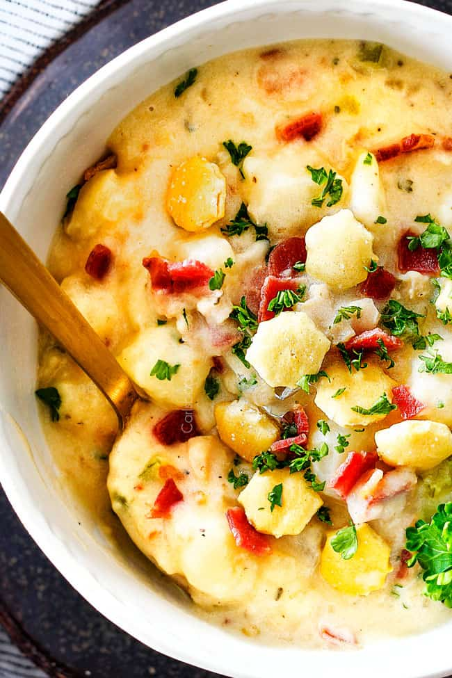

Best New England Clam Chowder Recipe

This is the best New England Clam Chowder you will ever eat! Some say that Manhattan Clam
chowder is better, but I tend to disagree. There is nothing like the creamy consistenct of
a good bowl of New England Clam Chowder.
Ingredients
- 3 (6.5 oz.) cans chopped/minced clam in clam juice*
- 1 (8 oz.) bottle clam juice*
- 6 thick center-cut bacon strips, chopped
- 1 tabelespoon butter
- 2 stalks celery, finely chopped
- 1 large onion, chopped
- 1 1/4 pounds (3 1/2 cups) Yukon gold potatoes peeled and diced into 1/4" cubes
- 3-5 garlic cloves, minced
- 1/4 teaspoon red pepper flakes
- 1/3 cup all-purpose flour
- 2 cups low-sodium chicken broth
- 2 teaspoons chicken bouillon
- 2 bay leaves
- 1/2 teaspooon EACH dried parsley, dried oregano, salt
- 1/4 teaspoon EACH dried thyme, pepper
- 1 cup heavy cream
Steps
- Drain clam juice from cans into a liquid measuring cup. Add enough bottled clam juice to equal 2 ½ cups. Set aside. (See directions in Notes if using fresh clams.)
- In a Dutch oven, cook bacon over medium heat until fat is rendered and slightly brown. Remove half of the bacon with a slotted spoon to a paper towel lined plate. Drain off all but 2 tablespoons grease. To the remaining bacon and drippings, melt in 1 tablespoon butter over medium heat.
- Increase heat to medium high and add celery and onion. Sauté for 5-7 minutes or until onions are soft. Add potatoes, garlic, red pepper (if using) and sauté 30 seconds. Sprinkle in flour and cook an additional 1 minute. Stir in chicken broth, reserved 2 ½ cups clam juice, chicken bouillon, bay leaves and all seasonings. Bring to a boil then reduce to a simmer. Simmer, uncovered, for 15-20 minutes or until potatoes are very tender.
- Stir in heavy cream and bring to a simmer to heat through. Discard bay leaves. Remove from heat and stir in clams. Taste and add salt/pepper to taste. (You may or may not need additional salt depending on how salty your clams and bacon are.) For a thinner or less chunky soup stir in additional heavy cream/milk or chicken broth.
- Top individual servings with reserved bacon and oyster crackers and fresh parsley if desired.